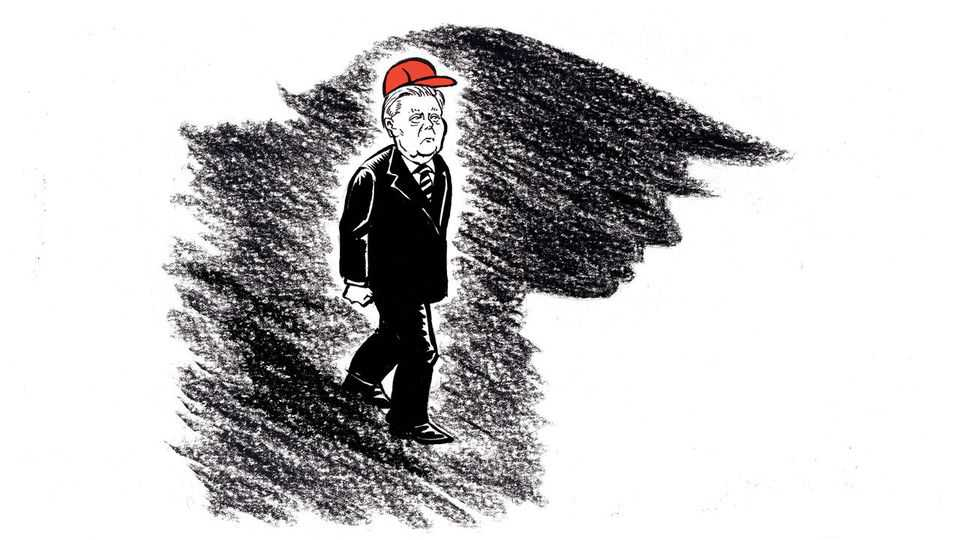

Lindsey Graham tried to save the wrong countries from Donald Trump
He should have put American democracy first
July 16th 2026

Anyone anxious that the American establishment can no longer speak loudly with one voice should be heartened by the outpouring of adulation from Washington’s elite for Senator Lindsey Graham, who died from heart disease on July 11th. In part, the reaction reveals real affection for a politician nimble enough to charm senators of both parties, along with the press—its most experienced, jaded members in particular. The reaction also illuminates what establishment Washington prizes most: relevance, a quality honoured there above honour itself, as Donald Trump intuited from the start of his own political career.
Republicans who put their principles ahead of loyalty to Mr Trump, such as Mitt Romney and Liz Cheney, live on. But they are forgotten by Republicans on Capitol Hill as anything but cautionary tales about the folly of crossing him. By contrast Mr Graham remade himself as so “relevant”—the term he used—that his sudden disappearance from the scene, at 71, creates problems rather than opportunities for the president, from confirming nominees to passing laws. The bigger question for Washington, and America, is whether Mr Graham’s legacy of compromise may yet prove the true cautionary tale. As Mr Graham himself warned in 2015, back when he was instructing Republicans that Mr Trump was a demagogue they should shun: “I’m not afraid of losing an election. I’m afraid of losing our soul.”
Mr Graham’s indefatigable pursuit of relevance made not just his conversion to Trumpism but his whole career a map of the trajectory of the Republican Party. It was completing its consolidation of the new South when, as part of the Republican Revolution led by Newt Gingrich in 1994, Mr Graham was elected as the first Republican in 117 years to represent South Carolina’s third congressional district. He helped lead the impeachment of President Bill Clinton over an affair with an intern. When Mr Graham was elected to the Senate in 2002, he succeeded Strom Thurmond, who had held the seat since 1954. Mr Graham represented not just a new generation of southern Republican but, after the attacks of September 11th 2001, a more internationalist, interventionist conservatism. He allied himself with Senator John McCain of Arizona to champion the wars led by President George W. Bush.
Mr Graham was in the thick of the action again when McCain won the Republican nomination in 2008. After his friend’s defeat, he found ways to make himself relevant to Barack Obama. He worked with John Kerry, a Democratic senator, on climate legislation in 2009 and voted for Mr Obama’s successful nominees to the Supreme Court, Sonia Sotomayor and Elena Kagan. Mr Graham became one of the Gang of Eight, a bipartisan group of senators who proposed far-reaching immigration reform. (Lexington’s brother, Michael Bennet, was also a member.) That bill passed the Senate in 2013 by a filibuster-proof majority, but the Republican speaker, John Boehner, refused to bring it to a vote in the House.
Even among the Republicans who made early criticisms of Mr Trump, Mr Graham stands out for his ferocity. Ever loquacious, he was prodigal on attack in 2015 and 2016: he warned that Mr Trump might order troops to commit war crimes; that he preyed on fear; that he was “completely unhinged”; that he would cost “the heart and soul of the conservative movement”; that his foreign policy was “gibberish”; that he was a “race-baiting, xenophobic, religious bigot”; that he “represents the worst in America”. Mr Graham did not vote for Mr Trump.
But that was when the senator believed Mr Trump would lose. After he won, Mr Graham became one of the president’s staunchest defenders. Where once Mr Graham claimed that stopping Mr Trump was worth losing an election, he now argued winning was what mattered: democracy had rendered his own judgments about ideas and character void. The American people “rejected my analysis”, he told CBS in 2017. Mr Graham never so surrendered his views when Americans chose a Democrat. But now he abided even Mr Trump’s attacks on his dear friend McCain, one of whose last wishes, before he died in 2018, was that the president not attend his memorial service. In his winking way Mr Graham continued to criticise Mr Trump’s ethics and motives off-the-record to the press. He contended he was currying the president’s favour not just to cling to the Senate seat he loved, but to put his relevance to work restraining Mr Trump’s worst impulses, particularly on foreign policy. Mr Graham wanted to sustain support for Ukraine, Israel and NATO, and to confront Iran.
But publicly, Mr Graham had become such a minion by the 2020 election that he endorsed Mr Trump’s claims of fraud. Then, after rioters attacked the Capitol on January 6th 2021, Mr Graham acknowledged the electoral outcome was legitimate. “Trump and I, we’ve had a hell of a journey,” he said on the Senate floor. “I hate it to end this way.” But by late February he was promoting Mr Trump for president in 2024. Referring to Ms Cheney, he told Fox News that May, “The people who try to erase him are going to wind up getting erased. It’s impossible for this party to move forward without President Trump.” That judgment has always been, for Mr Trump, usefully self-fulfilling. The fewer Republican leaders who stood up to Mr Trump, the more powerful he became.
When applied to politics, the definition of courage turns slippery. There is bravery in courting criticism, as Mr Graham did, by compromising to achieve some progress, even when principle is at stake. The challenge is in choosing where to draw the line. Mr Graham never did. Though he had some success in protecting his causes, by the time of his death he had changed Mr Trump’s politics far less than Mr Trump had changed his. And in his bid to promote democracy abroad, he helped corrode it at home. ■
Subscribers to The Economist can sign up to our Opinion newsletter, which brings together the best of our leaders, columns, guest essays and reader correspondence.